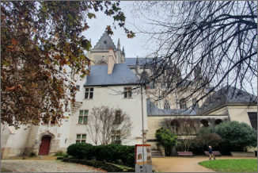

|  | |||
|---|---|---|---|
| 샤토 드 몽소로 현대박물관 | 앙주 벨로 빈티지 샤토 드 몽소로 현대박물관 프랑스 루아르 밸리 위치 | ||
| 유럽여행 | 샤토 드 몽소로 현대박물관 | 여행추천 | 앙주-소뮈르 지역은 로제당쥬라는 로제와인과 슈냉블랑으로 만든 화이트와인이 유명합니다. |
| 여행시간 | 2시간 | 여행일자 | 2022. 12. 12 |
루아르 계곡의 앙주(Anjou), 부르괴이, 쉬농, 소뮈르-샹피니(Saumur-Champigny) 등지에선 까베르네 프랑을 브레통이라 부르며 많이 재배합니다. 프랑스 북부의 루아르 계곡은 기후가 서늘한 곳이라 이곳의 까베르네 프랑 와인은 더 가벼운 타닌과 붉은 과일, 꽃, 허브 향이 특징입니다.